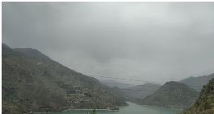
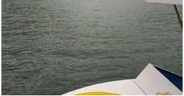
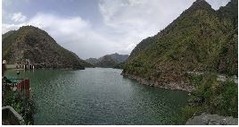
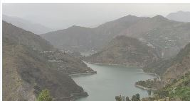
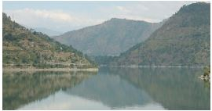
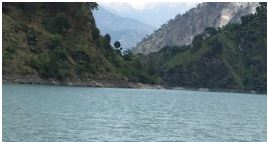
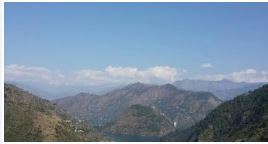
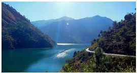

Nestled in a valley in the midst of pine forests, the lake is an excellent site for activities like
fishing, angling and boating. Himachal Pradesh Tourism department has built a boat house adjacent to the lake which
has facilities for water sports like river rafting, motor boating, canoeing, and kayaking. Other than the water
sport activities, pedal boats and rowing boats are also available for the tourists.
The Chamera Hydel Electric Project, one of the main hydel projects of Himachal Pradesh, is situated nearby.
Chamera Lake, though located in the midst of dense forests, is well connected by roads making it easy to reach the
place.
Other tourist spots near Chamera Lake include the Bhandal Valley and the Bhalei temple
Gallery
1 / 10

Caption Text
2 / 10

Caption Two
3 / 10

Caption Three
4 / 10
Caption Three
5 / 10

Caption Three
6 / 10

Caption Three
7 / 10
Caption Three
8 / 10

Caption Three
9 / 10

Caption Three
10 / 10

Caption Three
Reviews
How to Reach
Chamera Lake is located very close to Dalhousie, and can be reached pretty
easily. The distance between Chamera Lake and Dalhousie is nearly 37 kms, which can be covered
within an hour or so via car. There are currently no buses that take you to Chamera Lake from
Dalhousie, but local transport such as jeeps and vans are easily available. Their schedule is not
fixed though, so make sure to plan accordingly. The roads are well paved and well maintained, so getting here won’t
be a problem at all. It is one of the most popular attractions here, so make sure to spend some time here. There are
also several hotels nearby, so if you want to spend the night nearby it won’t be a problem.
By Air
By Road
By Train
By Sea
Pune to Dalhousie
-
33.0 hours
-
-
Mumbai to Dalhousie
-
-
-
-
Kolkata to Dalhousie
-
34.0 hours
-
-
New Delhi to Dalhousie
-
10.0 hours
-
-
Bangalore to Dalhousie
-
43.0 hours
-
-
About
It is located at an altitude of 763m from the surface of the
sea. In Chamba District, the Chamera Lake is developed by Chamera Dam on the Ravi River at Chourah. You can easily
access the site from Chamba – Pathankot highway. Water Sports activities are easily available at Chamera Lake.
Chamera Lake, a scenic bulging of Chamba District, is 25-35 km from the popular hill resort of Dalhousie. An
artificial lake, it is the collection of Chamera Hydroelectric Project that is built over the Ravi River.
Chamera Dam is connecting by the road goes along the Lake to Bhalei Temple and the famous thick dense forests of
Bhandal valley. A water sports sub-center has set up by the Himachal Pradesh Department of Tourism near the lake
to promote the water sports activity at the lake. The lake also provides abundant opportunities for boating and
fishing. The Dam site enjoys very sharp changeability in climate between April to June.During the day it can get
very hot (around 35°c) though by the evening, temperatures fall to between 18 to 20°c. Between the month of July
and September the area received concentrated to heavy rainfall and temperatures vary down 20 to 26°c during the
day and 8 to 12°c at night.
The project area enjoys a maximum temperature of approx.15°c between October and December and sometimes the
temperature are known to fall below freezing point. Chamera Lake offers irrigation facilities to the many villages
that are expanded in and around Chamera Lake. For these villagers this lake is a source of subsistence with its
natural water reserves. This lake is situated between grassy pine forests and lustrous or glazed valleys. If you
want to visit Chamba or Dalhousie, make sure to visit this spectacular lake. Water sports of varied kind are also
practiced here, through which your skill sharpens at river rafting or simply slow off with still water sports on
the Chamera Lake.